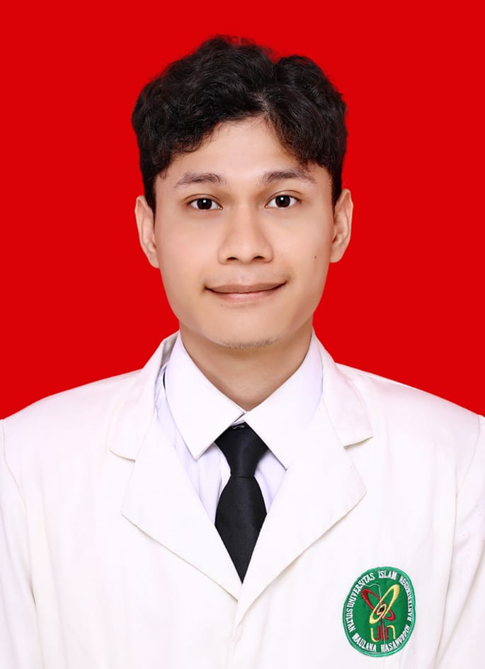

📧 salmanalfarizi1405@gmail.com
📱 081288212619
📍 Tangerang, Indonesia
Indonesia
Arab
Lulusan sarjana S1 pendidikan guru SD yang memiliki pengalaman mengajar di sekolah dasar. Memiliki kemampuan komunikasi yang baik, kreatif, dan mampu bekerja dalam tim. Berkomitmen untuk terus mengembangkan diri dan memberikan kontribusi positif dalam dunia pendidikan.
Menguasai pembelajaran semua bidang studi di sekolah dasar, termasuk matematika, bahasa Indonesia, IPA, IPS, seni, dan pendidikan jasmani. Memiliki pemahaman yang baik tentang kurikulum dan metode pembelajaran yang efektif untuk anak-anak.
membuat gambar perspektif dengan teknik yang baik dan kreatif, serta mampu menyampaikan pesan atau cerita melalui karya seni tersebut.
Membuat karya seni lukisan dan gambar dengan berbagai teknik dan media, serta mampu mengekspresikan ide dan emosi melalui seni visual. Dan gambar perspektif yang dibuat dapat digunakan untuk berbagai keperluan, seperti ilustrasi, desain grafis, atau dekorasi.
| ✔ Menjuarai lomba gambar perspektif | 2019 |
| ✔Webinar publikasi jurnal ilmiah | 2024 |
• Gambar
• Lukis 3D/2D
• Gambar Perspektif
• Dakwah
• Membaca buku